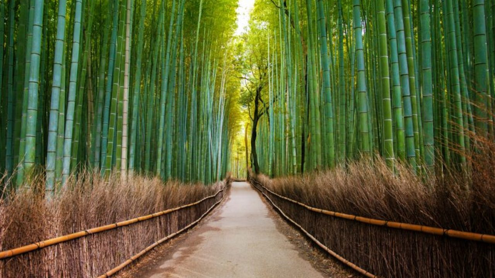
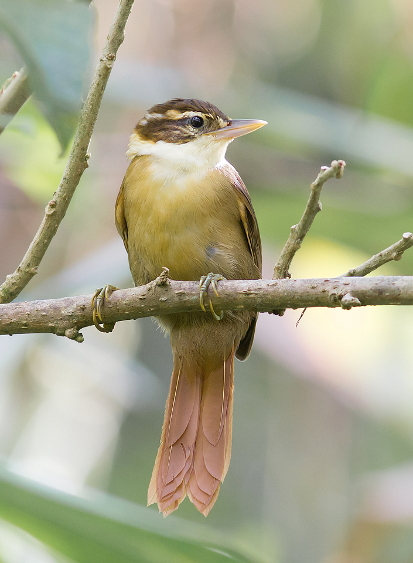
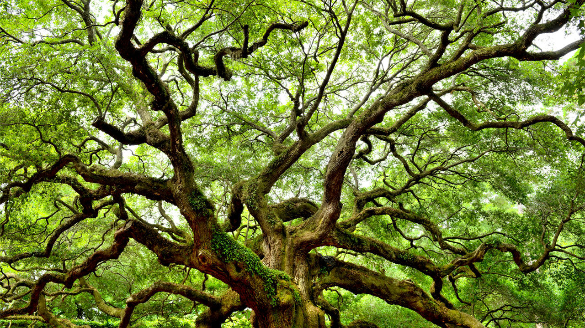

Habitat
Su habitat ideal son los bosques de bambu, las zonas montañosas, humedas y frescas que le proveen alimento y refugio. Logra adaptarse al cautiverio, lo que resulta de gran importancia por la constante amenaza de extincion de esta especie como consecuencia de la perdida de su hábitat natural.
El habitat que permite el pleno desarrollo del oso panda posee la importante caracteristica de no sufrir variaciones climatologicas, es decir, la temperatura y condiciones climaticas se mantienen estables durante todo el año.
Las condiciones medioambientales de estas montañas son idoneas para el crecimiento del bambu, un alimento imprescindible en la dieta del oso panda, que necesita consumir aproximadamente 12 kilos de bambu diariamente.
Fauna
A continuación se incluye una lista de las aves del Bosque Atlantico que se asocian con el bambu:
Palomita Morada (Claravis godefrida)
Pijui Corona Rojiza (Synallaxis ruficapilla)
Trepador-coleira (Anabazenops fuscus)
Ticotico Ojo Blanco (Automolus leucophthalmus)
Ticitico Ceja Blanca (Anabacerthia amaurotis)
Tacuarero (Clibanornis dendrocolaptoides)
Picapalo Oscuro (Campylorhamphus falcularius)
Batara Gigante (Batara cinerea)
Batara Pintado (Mackenzianena leachi)
Algunas especies de la lista, tal como el Gallito Overo (Psilorhamphus guttatus) y el Batará Pecho Negro (Biatas nigropectus) estan casi totalmente limitados a grandes herbajes de bambu. Otras se encuentran en habitats adicionales, pero son mas abundantes en lugares donde el bambu es comun. Sin embargo, existen otras especies ubicadas en lugares con diversos tipos de arboles y plantas, pero que se alimentan especialmente del bambu.
Flora
La vegetacion secundaria arborea y arbustiva derivada de selva mediana subperennifolia se desarrolla en toda la
superficie de este predio. Esta comunidad vegetal presenta un dosel en formacion a una altura de aproximadamente
6 a 8 m, con algunos arboles sobresalientes de hasta 9 m de altura total. Por debajo del dosel se presenta un estrato
arbustivo con una altura media de aproximadamente 4 a 5 m formado principalmente por las mismas especies
dominantes del dosel, mientras que el estrato herbaceo es escaso y disperso.
Entre los arboles de rapido crecimiento que forman la vegetacion arborea destacan por su abundancia el tzalam
(Lysiloma latisiliquum), y el jabin (Piscidia piscipula). Entre los arbustos se observan con frecuencia el tzalam
(Lysiloma latisiliquum) y el alamo (Ficus cotinifolia) como especies dominantes.